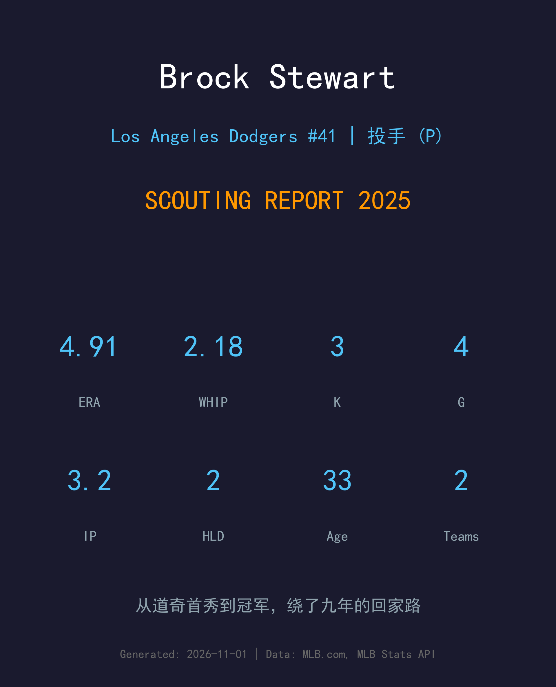
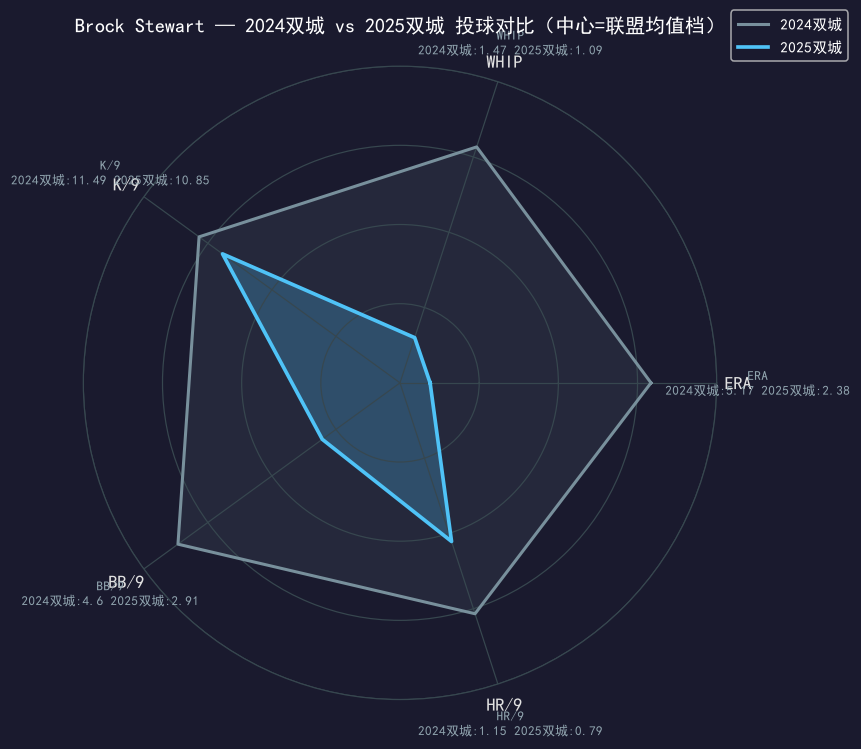
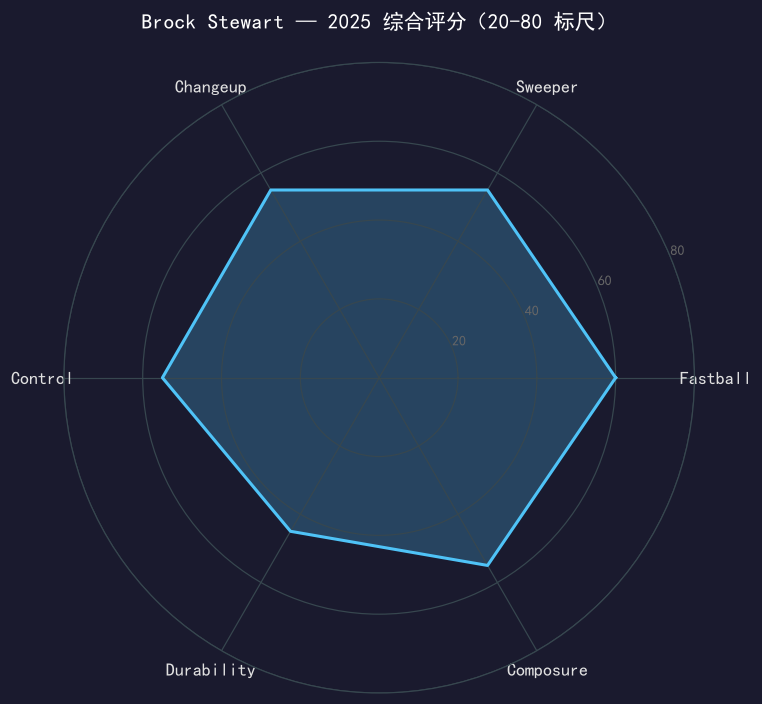

Los Angeles Dodgers #41 | 投手 | 右投 | 从道奇首秀到冠军，绕了九年的回家路

Brock Stewart 的 2025 年是一条完美的 V 形曲线：在双城投出生涯最好的 39 场 2.38 ERA、14 次中继成功，然后在 7 月 31 日交易截止日被换回梦开始的地方——道奇用 James Outman 从双城把他换了回来。九年前他穿着道奇球衣登上大联盟（2016-06-29），九年后他穿着道奇球衣拿到世界大赛戒指的入场券。
道奇段的故事却有点苦涩：8 月 1 日激活后出赛 4 场、2 次中继成功，8 月 12 日右肩发炎进入 15 天伤病名单，直到 9 月 29 日才回归——赛季最后一周他在名单上，但再也没有投球。4 场 3.2 局、4.91、2.18 WHIP 的数字配不上他双城段的 2.38/1.09，但冠军队名册上"Stewart, B."这个名字，是他九年漂流最恰当的终点。
从 2025 年 11 月的视角看，33 岁的 Stewart 手握一枚戒指、一条手术重建过的手肘和 2023-2025 三个大联盟赛季合计 3.10 ERA 的成绩单——对一个 2020-2022 连续三年消失在 MLB 名单上的投手来说，这已经是体育史上都排得上号的复出剧本。
2016 年 6 月 29 日以先发身份为道奇登上大联盟，当年 7 场（5 先发）。那时的他是被视为轮值苗子的右投新星——谁也没想到这条路要绕九年。
手肘手术三年后重返大联盟，28 场 27.2 局自责分率 0.65、WHIP 1.08、8 次中继成功 1 救援——这是 MLB 历史上最惊人的复出赛季之一，也重新定义了他的生涯。
双城段 39 场 2.38 ERA、14 次中继成功全队领跑；7/31 被交易回道奇；随队拿下世界大赛冠军。从诺默尔到洛杉矶，绕了九年，圆了一个圈。
以下为道奇段数据（2025-07-31 自双城交易加盟、2025-08-12 右肩发炎进入 IL、2025-09-29 激活）：

| 赛季 | 球队 | G | GS | ERA | WHIP | IP | SO | BB | HLD |
|---|---|---|---|---|---|---|---|---|---|
| 2023 | MIN | 28 | 0 | 0.65 | 1.08 | 27.2 | 39 | 11 | 8 |
| 2024 | MIN | 16 | 0 | 5.17 | 1.47 | 15.2 | 20 | 8 | 7 |
| 2025 | MIN | 39 | 0 | 2.38 | 1.09 | 34.0 | 41 | 11 | 14 |
| 2025 | LAD | 4 | 0 | 4.91 | 2.18 | 3.2 | 3 | 2 | 2 |
2024 到 2025 的双城段是一条漂亮的反弹曲线：自责分率 5.17→2.38、WHIP 1.47→1.09，保送率几乎砍半（4.60→2.91），而出赛数翻倍。更难得的是三振产量没有牺牲（K/9 维持在 10.9 左右）——这是"控制精进"而非"球速换精准"的成熟标志。道奇段的小样本失速（4.91）与右肩发炎直接相关：8 月那 4 场球他明显在收着投，19.64 球/局也远高于双城段的正常水准。
2025 赛季真实配球数据（MLB Stats API pitchArsenal，双城+道奇汇总）：
绝对主力球种，超过一半的配球。96+ 的速球配上他 6'3" 的出手角度，上旋位移在同速段属中上。
主要三振武器，11.5 mph 速差设计用来骗挥空。2025 年横扫滑球的进垒点控制是他保送率下降的关键。
与四缝线同速的沉球版本，对付左打的滚地球诱导选项，双城段用得更多。
5.6 mph 速差偏小的变速，更多作为配球节奏的干扰项而非夺三振武器。
夹在速球与滑球之间的过渡选项，用来凿内角。
2016 年的 Stewart 是道奇农场排名前列的先发投手，但大联盟先用残酷的方式给他上课：先发 5 场 5.79、2018 年 6.11、2019 年在道奇 3 场 18.00 后被送到蓝鸟——先发这条路对他关上了门。2019 年后手肘韧带重建手术（Tommy John）又夺走了他三个赛季。真正的转折发生在双城：教练组把他改造为纯后援，减掉配球、放大速球，于是有了 2023 年的 0.65。这条「先发失败→手术→中继重生」的路径，是近十年后援改造最成功的模板之一。
7 月 31 日的交易在情绪上是「回家」，在棒球逻辑上是典型的冠军球队补强：道奇牛棚需要一个能稳定吃第七八局的中继臂，Stewart 双城段 39 场 2.38、14 次中继成功的产量正是稀缺品。代价 James Outman 是 2023 年的中心打者候选，但 2025 年他已在小联盟蹉跎——用一支球队的「过去」换另一支球队的「现在」，道奇赢在了时间点上。
8 月 12 日的右肩发炎让一切按下暂停键。33 岁 + TJ 史 + 肩发炎，这是投手体检表上最需要警惕的组合。9 月 16 日他在 3A 投了康复赛、9 月 29 日回归名单，但道奇在季后赛没有让他登板——保护性冻结。从 11 月的视角看，肩关节的核磁共振结果将决定他 2026 年的身价：是「冠军牛棚的一员」，还是「又一个被肩膀终结的复出故事」。

九年绕一圈回家的中继专家
B- 级 / 冠军牛棚拼图
道奇 2025 季后赛夺冠之路：外卡 2-0 红人 → NLDS 3-1 费城人 → NLCS 4-0 酿酒人 → 世界大赛 4-3 多伦多蓝鸟。
Stewart 没有在这条路上登板——8 月的肩伤让他在季后赛名单上属于「被保护的名字」。但对这位 2016 年从道奇出发的投手来说，意义不在出赛记录：九年前他作为轮值希望之星离开这条时间线，九年后他以冠军队成员的身份走完最后一圈。0 场季后赛出赛，1 枚戒指，这是棒球给他的圆满。
Stewart 的 2026 年取决于右肩的体检报告。如果核磁共振干净，他是自由市场上最诱人的中继名字之一：33 岁、连续三年大联盟、2025 双城段 2.38、还有冠军 pedigree。道奇手里有球队选项的空间，把他留在冠军牛棚是顺理成章的事；市场上也会有至少十支球队愿意为他的 96 mph 开出两年合约。
理想剧本：肩伤无碍，续约道奇，2026 年成为第八局固定选项
现实基准：一年合约加盟竞争者牛棚，ERA 3.5 档的中继主力
下行风险：肩部需要手术，复出剧本第三次上演
Brock Stewart 来自伊利诺伊州的诺默尔（Normal）——一个名叫「正常」的小镇，却走出了他这段绝不正常的职业生涯。2016 年 6 月 29 日，他以道奇先发投手身份登上大联盟，那时的球探报告写满「轮值骨架」「三号先发地板」。大联盟的回答是：先发 5 场、自责分率 5.79，紧接着是三年的挣扎与 2019 年的 Tommy John 手术。
2020-2022 赛季，他的名字从大联盟消失。无数投手在这个阶段结束职业生涯，但 Stewart 在 3A 和康复中心重塑了自己：减掉一半配球、把速球提到 96、学会在两球以内解决打者。2023 年在双城，他用 0.65 的自责分率宣布回归——那是当年 MLB 最动人的故事之一。2024 年 5.17 的回落一度让「昙花一现」的质疑卷土重来，但 2025 年 39 场 2.38 的回答干脆利落。
2025 年 11 月的 Brock Stewart 站在一个完美叙事的终点：从道奇出发，绕经蓝鸟、手术台、小联盟和明尼苏达的寒夜，最后穿着道奇球衣成为世界冠军。Normal, Illinois 的孩子，走了一条最不正常的路，回到了最开始的地方。